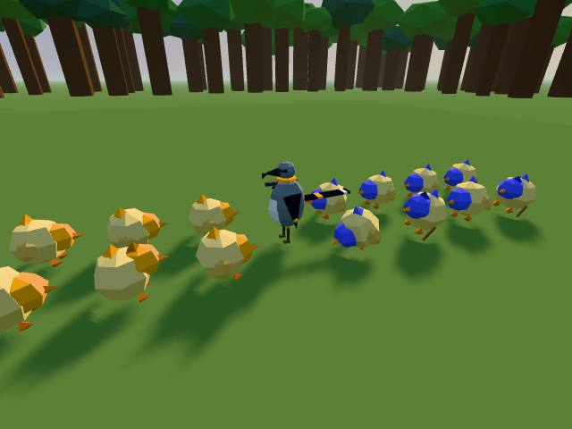

Fledglings
Fledglings are the lane units. Waves leave both bases on a timer and march down all three lanes. Scrappers are small melee chicks with stubby wings; Slingers carry slings and attack from range. Both wear their flock's colour.

| Scrapper (melee) | Slinger (ranged) | |
|---|---|---|
| Health | 260 | 200 |
| Damage per hit | 20 | 14 |
| Attack interval | 1 s | 1.2 s |
| Range | 2.5 m | 18 m |
| Projectile speed | - | 30 m/s |
| Size | 0.9 m tall | 0.8 m tall |
Waves
| From match time | Scrappers per lane | Slingers per lane |
|---|---|---|
| 0:00 | 3 | 1 |
| 10:00 | 3 | 2 |
| 20:00 | 4 | 2 |
| Rule | Value |
|---|---|
| First wave / every | 30 s / 30 s |
| March speed | 5 m/s |
| Column | 2 wide, 1.5 m apart |
| Health and damage growth | +1.5% per minute, fixed at spawn |
| Damage against structures | ×1.5 |
| Picks the nearest enemy fledgling within | 14 m |
| Retaliates against a hero who hurt an ally within | 14 m in the last 2 s |
| Attacks any hero within | 10 m |
| Drops a target after | 18 m |
| Retargets every | 0.5 s |
What they do
Each fledgling picks a target every half second: the nearest enemy fledgling first, then an enemy hero who hurt an ally, then a structure, then a nearby hero. Otherwise it keeps marching. A fledgling that is pulled far from its lane returns to it.
Fledglings cannot be beak-shot. When one dies it drops a seed pod: see Economy. They are also what powers your push: towers take extra damage from them, and the Brood Ward only drops when your fledglings are near.